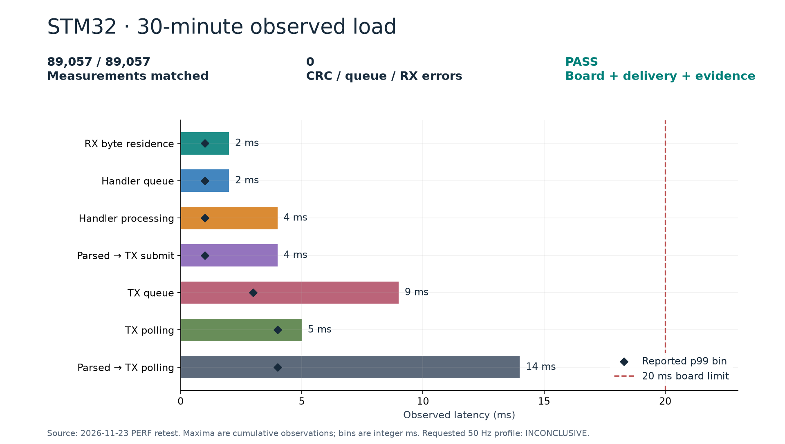
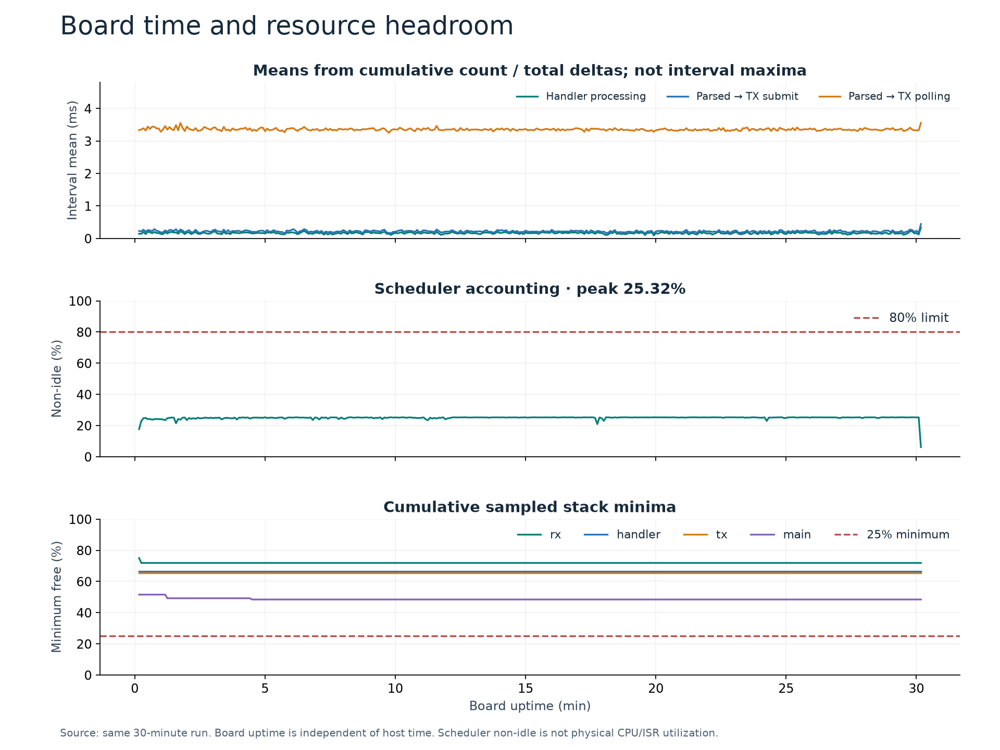
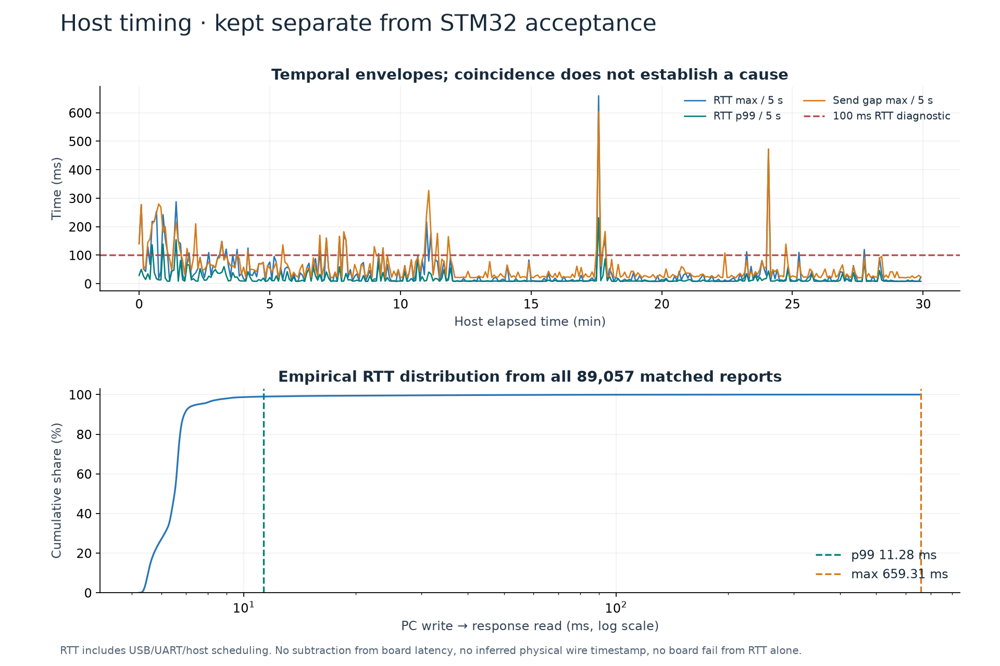
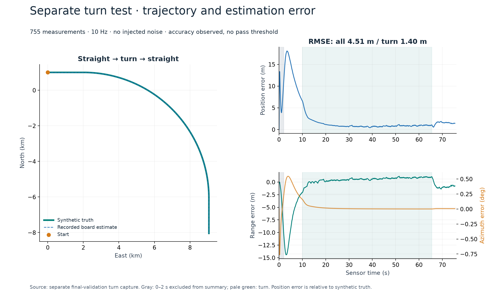

RADAR LAB / EVIDENCE REVIEW
실보드 성능과 호스트 영향
30분 관측 부하의 보드 처리는 통과했다. 요청50Hz 전체 입력은 미확정이다. 둘을 구분해 원본 기록을 분석했다.
결과를 읽는 기준
| 분류 | 판정 | 근거 |
|---|
| 관측 부하의 보드·전송·증거 | 통과 | 30분 / 측정 89,057개 모두 대응 |
| 요청한50Hz 전체 입력 | 미확정 | 90,000 예정 슬롯 중943개 미송신 |
| 호스트 RTT | 진단 한도 초과 | p99 11.279ms / 최대659.311ms; 보드 gate 제외 |
2026-11-23 · STM32F746G-DISCO · 성능 판정/원본 기록 변경 없음. 이전 CRC2건의 원인을 이번 결과로 확정하지 않는다.
GUI 무음 시연 · 저장 기록 재생
별도 GUI 세션(2026-11-23 05:13:57 UTC)의139개 측정과140개 TRACK을 기존 화면에 재현한다. 최신30분 성능 시험이나 새 실보드 실행 영상이 아니다. 제품 GUI에 재생 기능을 추가한 것도 아니다.
MP4 다운로드 · 영상 출처·재생 정보
데이터에서 보이는 점
- 예정 입력의 1.05%가 미송신이었다. 누락943개 중 732개는 첫12분의 예정 슬롯에 집중됐다.
- RTT가100ms를 넘은 54건 중 43건은100ms 초과 송신 공백과 시간 구간이 겹쳤다. 이는 호스트 경로 지연과 부합하지만 특정 앱이나 스케줄러가 원인이라는 인과 증명은 아니다.
- 선회 시험에서는2–10초 초기 직선 구간이 warm-up 이후 전체 제곱 위치오차의 91.3%를 차지했다. 전체 RMSE만 보면 이후 구간의 오차를 구분하기 어렵다.
RTT100ms 초과 사건표
보드 지연과 판정
최댓값과 기록된 p99 구간을20ms 기준과 비교했다. 이 그림은 개별 보드 지연의 원시 분포가 아니다.

SVG · PNG
시간에 따른 보드 자원
누적 카운터의 차분으로 구간 평균을 계산했다. 스택은 누적 최소 여유이며, CPU는 스케줄러 비유휴 관측값이다.

SVG · PNG
호스트 지연
89,057개 입력과 응답을 센서 시각으로 연결한 뒤 동일한 PC monotonic 시계의 read−write를 계산했다. 최대659ms는 보드 지연으로 해석하지 않는다.

SVG · PNG
별도 선회 시험
다른 실행의10Hz·무잡음 선회 기록이다. 최초2초를 제외한 위치 RMSE는4.513m, 선회 구간은1.396m였다. 합격 한계가 정해진 정확도 시험은 아니다.

SVG · PNG
수치 표와 재현 자료
| stage | samples | mean_ms | p50_bin_ms | p95_bin_ms | p99_bin_ms | max_ms | over_20ms |
|---|
| RX byte residence | 1346667 | 1.000 | 1 | 1 | 1 | 2 | 0 |
| Handler queue | 89057 | 0.054 | 0 | 1 | 1 | 2 | 0 |
| Handler processing | 89057 | 0.163 | 0 | 1 | 1 | 4 | 0 |
| Parsed → TX submit | 89057 | 0.217 | 0 | 1 | 1 | 4 | 0 |
| TX queue | 90860 | 0.126 | 0 | 1 | 3 | 9 | 0 |
| TX polling | 90860 | 3.094 | 3 | 4 | 4 | 5 | 0 |
| Parsed → TX polling | 89057 | 3.354 | 3 | 4 | 4 | 14 | 0 |
보드 지연 값의 단위는ms이며 p50/p95/p99는 정수ms 히스토그램 구간이다.
| segment | samples | position_rmse_m | max_position_error_m |
|---|
| all after 2 s | 735 | 4.513 | 18.074 |
| straight before | 80 | 13.072 | 18.074 |
| turn | 555 | 1.396 | 6.583 |
| straight after | 100 | 1.487 | 1.867 |
지연 CSV · 보드 구간 CSV · CPU CSV · 호스트 구간 CSV · 입력 누락 CSV · 선회 CSV
분석 요약 JSON · 출처 해시·검증 · 원본 실보드 보고서